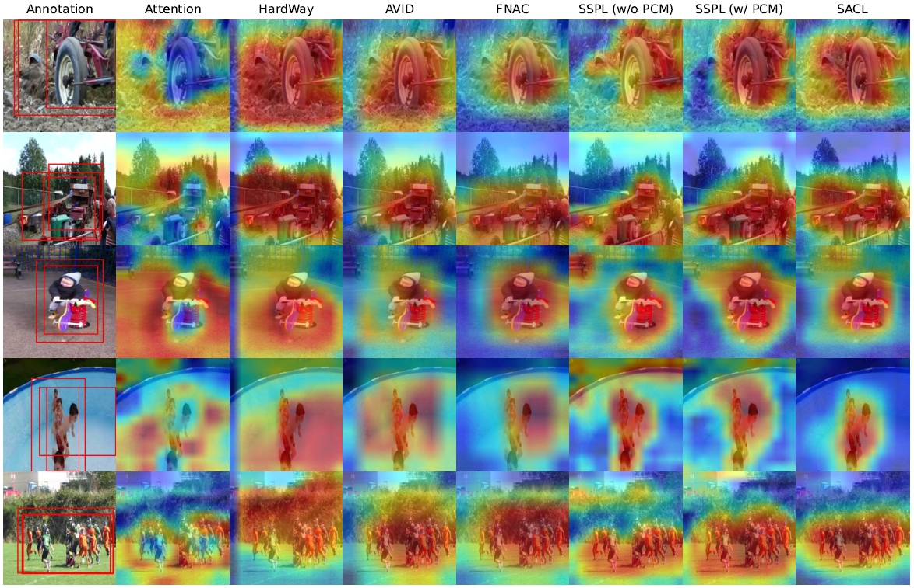
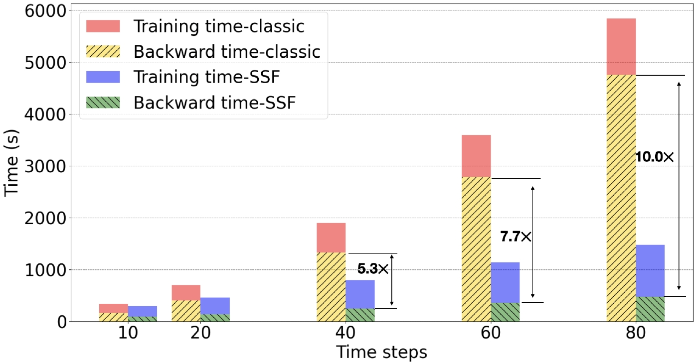
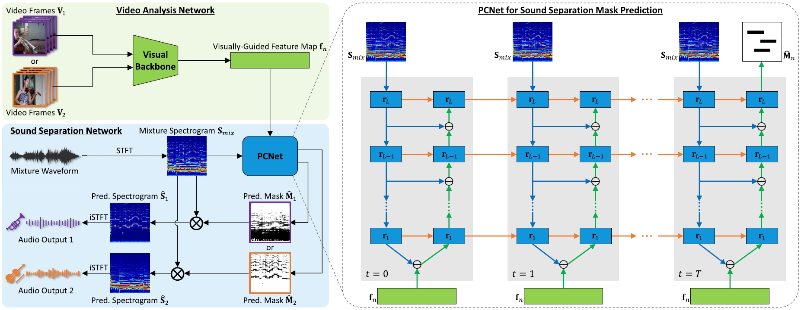
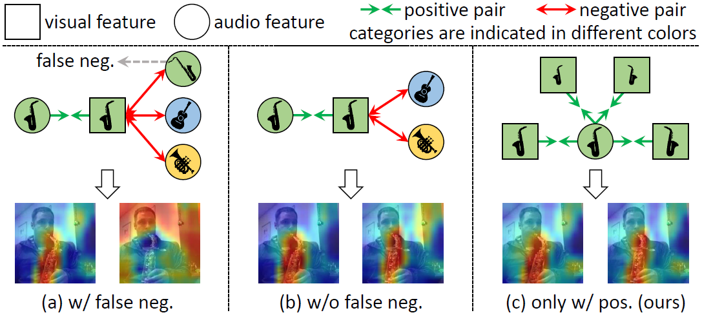
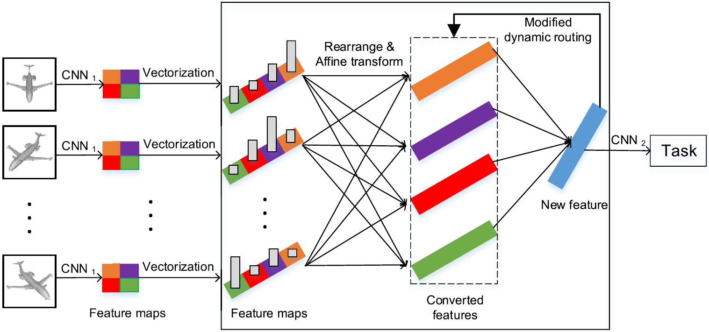
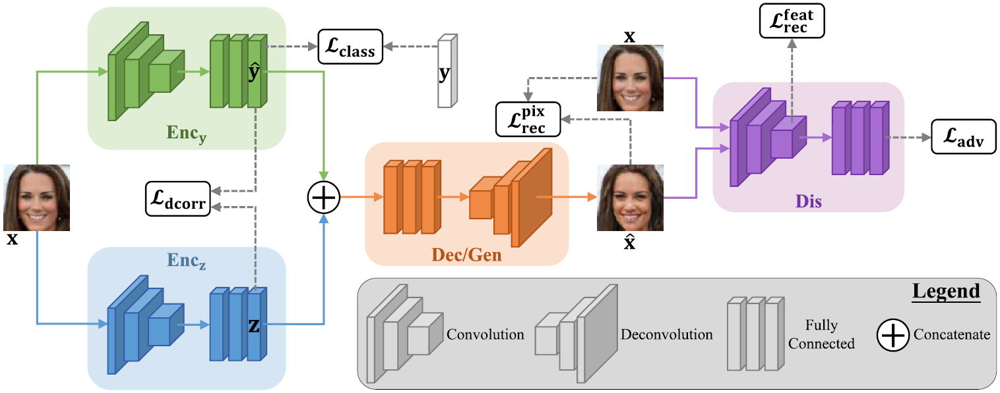
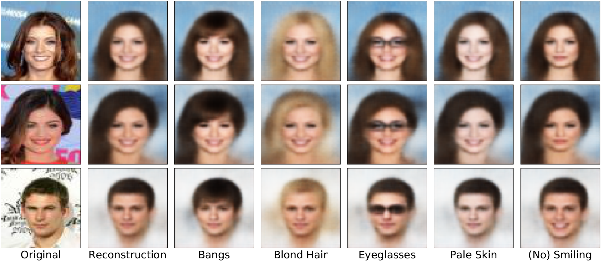
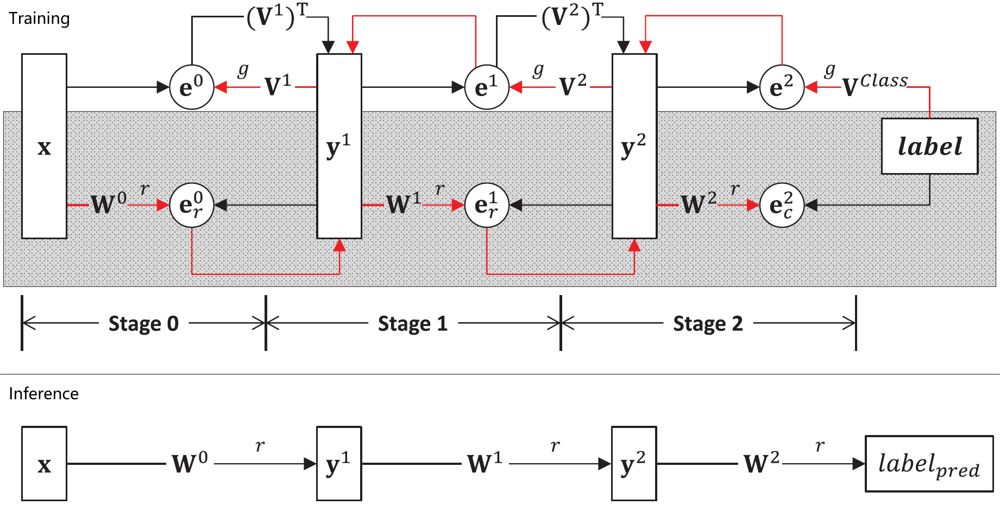
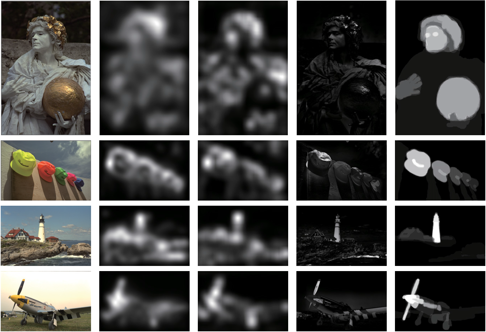

|
Zengjie Song (宋增杰) Assistant Professor School of Mathematics and Statistics Xi'an Jiaotong University Mathematics Building, No.28 Xianning West Road, Xi'an, Shaanxi 710049, China zengjie [dot] song [at] xjtu [dot] edu [dot] cn zjsong [at] hotmail [dot] com [Google Scholar] [GitHub] [Resume/CV] |
Short Biography
I am an Assistant Professor with the School of Mathematics and Statistics at Xi'an Jiaotong University (XJTU). Prior to joining XJTU, I did a Postdoc at the Institute of Automation, Chinese Academy of Sciences (CASIA), working with Prof. Tieniu Tan and Prof. Zhaoxiang Zhang. I received my PhD in Statistics and BS in Applied Mathematics from XJTU in 2020 and 2013, respectively, under the supervision of Prof. Jiangshe Zhang. I spent a wonderful year (Oct. 2017 – Oct. 2018) as a visiting PhD student with the Department of Computer Science, University of Illinois at Urbana-Champaign, where I was hosted by Prof. Oluwasanmi Koyejo.Research
My research interests include predictive coding, multimodal learning, and generative model, with a particular emphasis on the intersection of computer vision and computational neuroscience.Currently, I am fascinated by the Free Energy Principle proposed by Prof. Karl Friston. This theory describes with mathematical precision how the brain conserves energy by minimizing surprise, and has been successfully applied to account for many aspects of perception, learning, and action. The central goal of my research, inspired by these seminal works in computational neuroscience, lies in enabling machines to see and understand the world effectively and efficiently.
News
[08/2024] Our work on sound source localization by semantic-aware contrastive learning was accepted to IEEE T-PAMI.[08/2023] I was awarded funding from National Natural Science Foundation of China (NSFC).
[07/2023] Our work on accelerating training of spiking neural networks was accepted to ICCV 2023.
[06/2023] Our work on audio-visual sound source separation was accepted to IEEE T-NNLS.
[12/2022] I was awarded the Excellent Doctoral Dissertation Award of Shaanxi Province.
[03/2022] One paper on audio-visual sound source localization was accepted to CVPR 2022.
[11/2021] I was awarded funding from China Postdoctoral Science Foundation.
[11/2020] Our work on multi-view 3D object recognition was accepted to IEEE T-IP.
[06/2020] One paper on disentangled representation learning was accepted to IEEE T-CYB.
[03/2020] I have successfully defended my dissertation online!
[01/2020] My personal website was launched!
Publications & Preprints
|  |
Enhancing Sound Source Localization via False Negative Elimination
Zengjie Song, Jiangshe Zhang, Yuxi Wang, Junsong Fan, Zhaoxiang Zhang IEEE Transactions on Pattern Analysis and Machine Intelligence (T-PAMI), 2024 PDF | arXiv | Supplementary | Code | Bibtex |
|  |
SSF: Accelerating Training of Spiking Neural Networks with Stabilized Spiking Flow
Jingtao Wang, Zengjie Song, Yuxi Wang, Jun Xiao, Yuran Yang, Shuqi Mei, Zhaoxiang Zhang IEEE/CVF International Conference on Computer Vision (ICCV), 2023 PDF | Bibtex |
|  |
Visually Guided Sound Source Separation with Audio-Visual Predictive Coding
Zengjie Song, Zhaoxiang Zhang IEEE Transactions on Neural Networks and Learning Systems (T-NNLS), 2023 PDF | arXiv | Code | Bibtex |
|  |
Self-Supervised Predictive Learning: A Negative-Free Method for Sound Source Localization in Visual Scenes
Zengjie Song, Yuxi Wang, Junsong Fan, Tieniu Tan, Zhaoxiang Zhang IEEE/CVF Conference on Computer Vision and Pattern Recognition (CVPR), 2022 PDF | arXiv | Code | Bibtex |
|  |
DRCNN: Dynamic Routing Convolutional Neural Network for Multi-View 3D Object Recognition
Kai Sun, Jiangshe Zhang, Junmin Liu, Ruixuan Yu, Zengjie Song IEEE Transactions on Image Processing (T-IP), 2020 PDF | Bibtex |
|  |
Toward a Controllable Disentanglement Network
Zengjie Song, Oluwasanmi Koyejo, Jiangshe Zhang IEEE Transactions on Cybernetics (T-CYB), 2020 PDF | arXiv | Supplementary | Code | Bibtex |
|  |
Learning Controllable Disentangled Representations with Decorrelation Regularization
Zengjie Song, Oluwasanmi Koyejo, Jiangshe Zhang In arXiv, 2019 arXiv | Supplementary | Bibtex |
|  |
Fast Inference Predictive Coding: A Novel Model for Constructing Deep Neural Networks
Zengjie Song, Jiangshe Zhang, Guang Shi, Junmin Liu IEEE Transactions on Neural Networks and Learning Systems (T-NNLS), 2018 PDF | Code | Bibtex |

|
A Deep Neural Network Based on ELM for Semi-supervised Learning of Image Classification
Peiju Chang, Jiangshe Zhang, Junying Hu, Zengjie Song Neural Processing Letters (NPL), 2017 PDF | Bibtex |
|  |
No-Reference Image Quality Assessment Using Image Saliency for JPEG Compressed Images
Zengjie Song, Jiangshe Zhang, Junmin Liu Journal of Imaging Science and Technology, 2016 PDF | Bibtex |
Teaching
Linear Algebra and Analytic Geometry, XJTUInstructor
Fall 2024
Higher Algebra and Analytic Geometry, XJTU
Teaching Assistant (TA)
Fall 2023
Undergraduate Thesis Design, XJTU
Teaching Assistant (TA)
Spring 2015, Spring 2016, Spring 2017
Advanced Mathematics, XJTU
Teaching Assistant (TA)
Fall 2014
Misc.
- DDL is the primary productive force: AI conference deadlines and CCF conference deadlines.
- CV and ML conference acceptance rate: a list maintained by Du Tran.
Many thanks to Richard Zhang for sharing his website template! Last updated Oct. 5 2024.